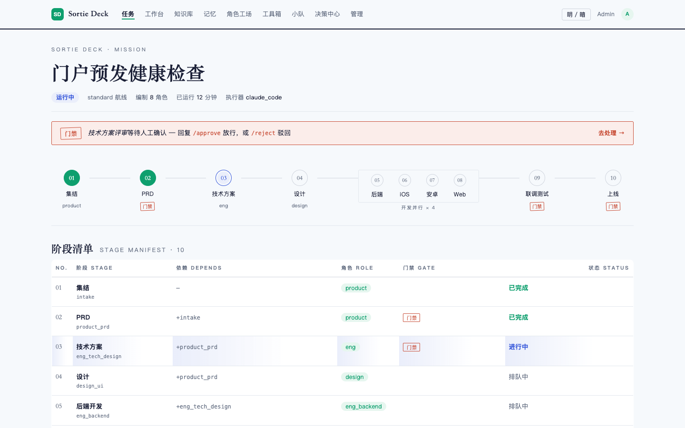
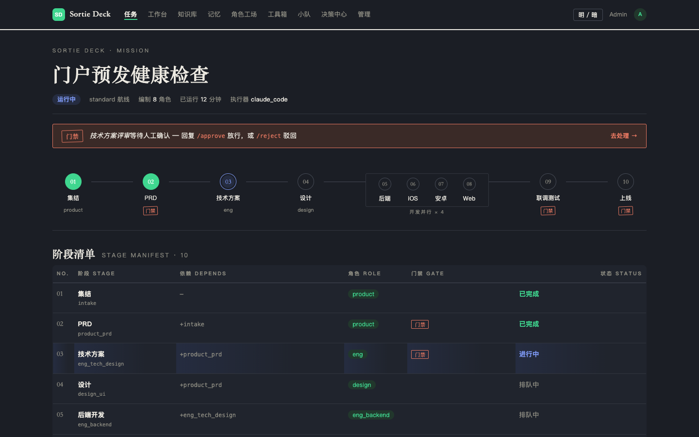
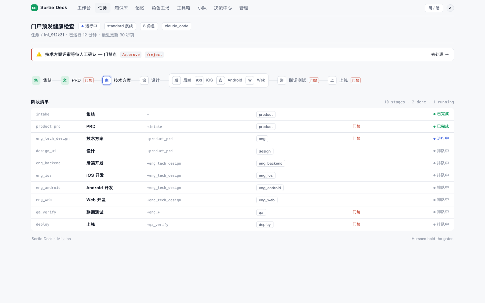
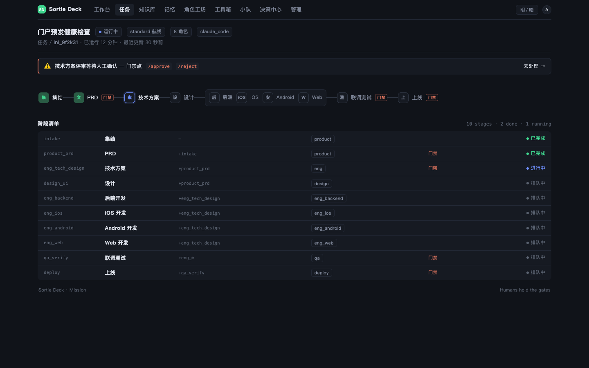
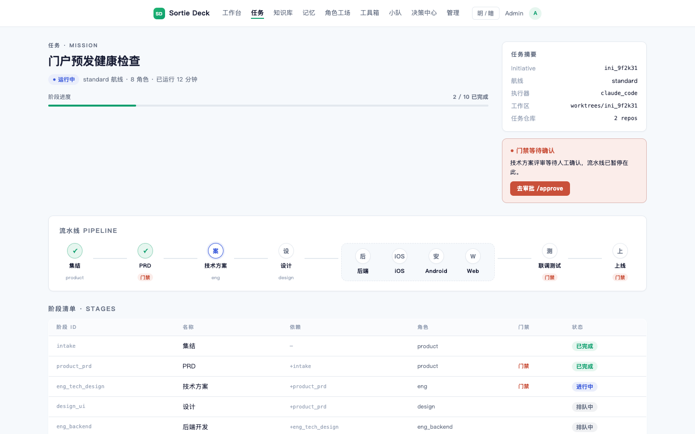
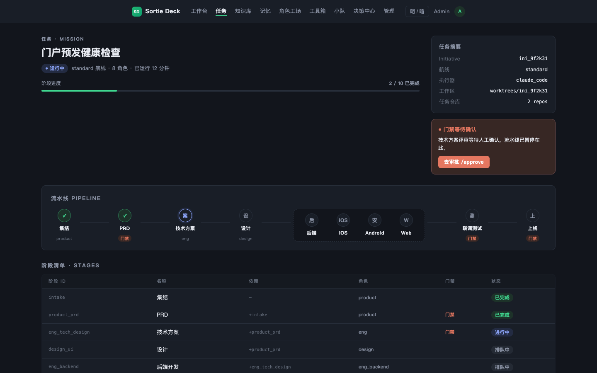

同一份真实内容（门户预发健康检查 · 10 阶段 · 2 门禁），三套设计逻辑。每个版本都内置明/暗切换（页面右上角「明 / 暗」按钮）。选一版深化，或混搭（如"v2 的配色 + v3 的右栏布局"）。
衬线大标题 + 纸感底色，阶段清单做成杂志目录，"门禁"是一枚旋转的戳记。辨识度最高、最有"作品感"，适合对外演示场景；但衬线在工作型界面的长期阅读里偏"读物"而非"工具"。


迁移 Linear 的设计语言：中性近黑、13px 紧凑 UI、1px 边框、零发光零渐变，状态即颜色语义。开发者零学习成本，长时盯流水线最舒服；个性表达最克制。


Stripe 团队会怎么做"控制平面"：卡片化分区、极细进度条、右栏任务摘要 + 门禁行动卡（CTA 最明确）、表头小写间距标签。信息架构最清晰、门禁最不可错过，兼顾对外展示的可信感。

